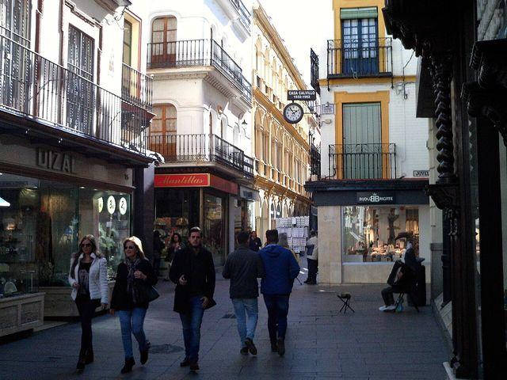
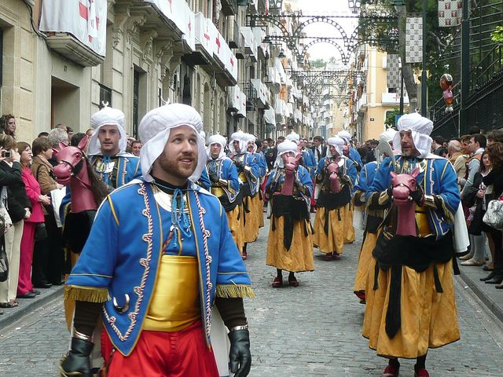
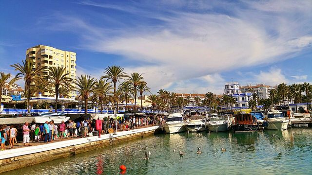
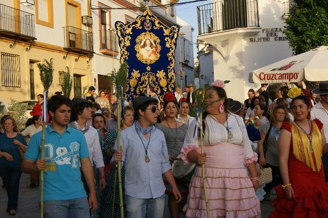
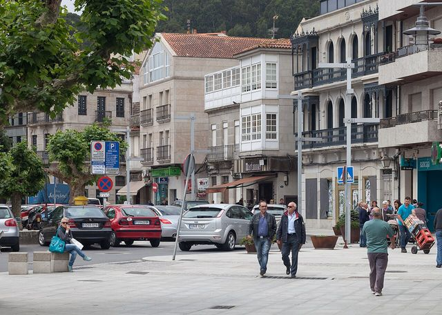
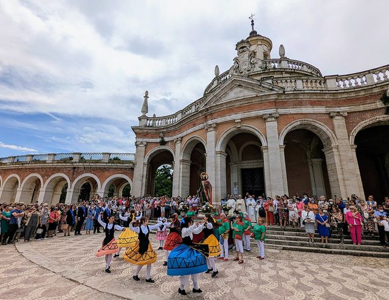
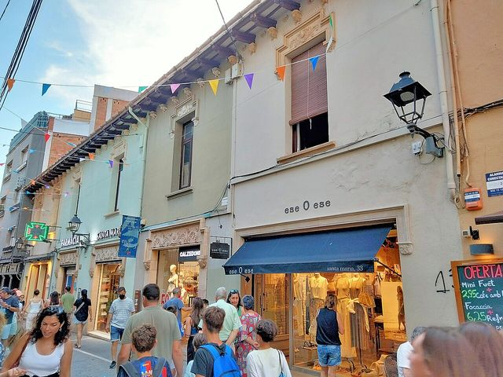
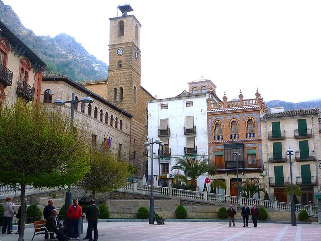
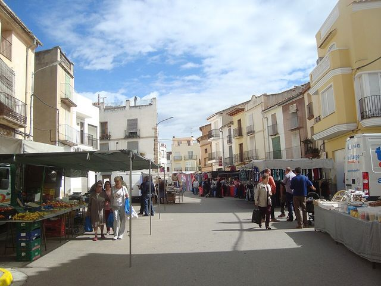

Explora el mapa
Copia este código y pégalo en tu web: se verá el mapa con la elección y el municipio que tienes elegidos, con la firma de Mapa Electoral y un enlace a esta página. Los datos tienen licencia CC BY 4.0.
Vista de municipios. Al acercarte aparecen las secciones censales. Canarias, en el recuadro. Pasa el cursor o toca una zona para ver su resultado. En el selector de elección están las generales desde 1977, las municipales desde 1979 y las europeas desde 1987. Las anteriores a 2004 y las municipales de 2007 se ven solo por municipio.
 Camino al 29NVox saca casi lo mismo donde uno de cada tres vecinos nació fuera que donde casi nadie lo hizo
Camino al 29NVox saca casi lo mismo donde uno de cada tres vecinos nació fuera que donde casi nadie lo hizo Camino al 29NEl espacio a la izquierda del PSOE fue el más votado en 9.810 secciones en 2015; en 2023, en 182
Camino al 29NEl espacio a la izquierda del PSOE fue el más votado en 9.810 secciones en 2015; en 2023, en 182 Camino al 29NEn Madrid, el PSOE saca diez puntos más cuando se vota al Gobierno que cuando se vota al alcalde
Camino al 29NEn Madrid, el PSOE saca diez puntos más cuando se vota al Gobierno que cuando se vota al alcalde Camino al 29NLa huelga del 11N apela a los barrios que menos votan: donde más paro hay, la participación cae al 61%
Camino al 29NLa huelga del 11N apela a los barrios que menos votan: donde más paro hay, la participación cae al 61% Camino al 29NAndalucía vota casi diez puntos más al PSOE cuando elige al Gobierno que cuando elige a la Junta
Camino al 29NAndalucía vota casi diez puntos más al PSOE cuando elige al Gobierno que cuando elige a la Junta Camino al 29NSumados, ERC y los comuns habrían sido la lista más votada en 1.431 secciones de Cataluña en 2023; por separado, en 232
Camino al 29NSumados, ERC y los comuns habrían sido la lista más votada en 1.431 secciones de Cataluña en 2023; por separado, en 232 Camino al 29NCon Puigdemont de candidato, Junts duplica su voto: del 11% en el Congreso al 22% en el Parlament
Camino al 29NCon Puigdemont de candidato, Junts duplica su voto: del 11% en el Congreso al 22% en el Parlament Vivienda y votoEl alquiler sube un 29% en València desde 2015, pero el voto apenas lo refleja
Vivienda y votoEl alquiler sube un 29% en València desde 2015, pero el voto apenas lo refleja Vivienda y votoEl PSOE sube en los barrios de alquiler casi el triple que en los de propietarios desde 2015
Vivienda y votoEl PSOE sube en los barrios de alquiler casi el triple que en los de propietarios desde 2015 Vivienda y votoLos barrios de pisos turísticos de Barcelona han perdido uno de cada diez electores desde 2015
Vivienda y votoLos barrios de pisos turísticos de Barcelona han perdido uno de cada diez electores desde 2015- Las 33 piezas de actualidad →Camino al 29N · Vivienda y voto · Historia electoral
 España16 de 16: Plasencia ha votado al ganador en todas las elecciones generales desde 1977
España16 de 16: Plasencia ha votado al ganador en todas las elecciones generales desde 1977 EspañaDos Hermanas ha votado al PSOE en las 16 generales; solo 11 pueblos, ninguno grande, lo han hecho con el PP
EspañaDos Hermanas ha votado al PSOE en las 16 generales; solo 11 pueblos, ninguno grande, lo han hecho con el PP EspañaDe 5.990 municipios a 762 en tres años: así se hundió UCD, y así cayó Ciudadanos en solo seis meses
EspañaDe 5.990 municipios a 762 en tres años: así se hundió UCD, y así cayó Ciudadanos en solo seis meses EspañaDonde se votaba a UCD y AP en 1977 se vota a PP y Vox en 2023; el mapa de Vox no se parece al de AP
EspañaDonde se votaba a UCD y AP en 1977 se vota a PP y Vox en 2023; el mapa de Vox no se parece al de AP- España6 de cada 10 municipios tienen menos electores que en 1977; Las Rozas tiene 14 veces más
 ÁvilaÁvila dio a Suárez el 46 % en 1986, cuando su partido sacaba el 9 % en España
ÁvilaÁvila dio a Suárez el 46 % en 1986, cuando su partido sacaba el 9 % en España Trebujena (Cádiz)Trebujena dio al PCE dos de cada tres votos en 1977 y aún da a Sumar uno de cada dos
Trebujena (Cádiz)Trebujena dio al PCE dos de cada tres votos en 1977 y aún da a Sumar uno de cada dos EspañaEn 1982 el PSOE pasaba del 60 % en al menos 748 municipios; en 2023, en 67
EspañaEn 1982 el PSOE pasaba del 60 % en al menos 748 municipios; en 2023, en 67 EspañaBarcelona, Terrassa o Dos Hermanas: 864 municipios donde la derecha estatal nunca ha ganado unas generales
EspañaBarcelona, Terrassa o Dos Hermanas: 864 municipios donde la derecha estatal nunca ha ganado unas generales EspañaPozuelo, Getxo o Ávila: 1.932 municipios donde el PSOE nunca ha ganado unas generales
EspañaPozuelo, Getxo o Ávila: 1.932 municipios donde el PSOE nunca ha ganado unas generales Mont-roig del Camp (Tarragona)Siete partidos distintos han ganado en Mont-roig del Camp: ha cambiado 11 veces de ganador en 16 generales
Mont-roig del Camp (Tarragona)Siete partidos distintos han ganado en Mont-roig del Camp: ha cambiado 11 veces de ganador en 16 generales Ourense y LugoEn Baltar votó el 16 % en 1979; hoy vota el 79 %. La participación imposible del interior gallego
Ourense y LugoEn Baltar votó el 16 % en 1979; hoy vota el 79 %. La participación imposible del interior gallego Canarias, Ceuta y MelillaEn Arona votó uno de cada cinco electores en las europeas de 2014
Canarias, Ceuta y MelillaEn Arona votó uno de cada cinco electores en las europeas de 2014 País VascoTres partidos en 1,3 puntos: el empate a tres de Euskadi en 2023 no tiene precedentes
País VascoTres partidos en 1,3 puntos: el empate a tres de Euskadi en 2023 no tiene precedentes EspañaEl voto en blanco se multiplicó por seis entre 1977 y 2000, y desde entonces se ha reducido a la mitad
EspañaEl voto en blanco se multiplicó por seis entre 1977 y 2000, y desde entonces se ha reducido a la mitad AndalucíaAntes de Teruel Existe: los cinco diputados andalucistas de 1979 y el 19,7 % de Cádiz
AndalucíaAntes de Teruel Existe: los cinco diputados andalucistas de 1979 y el 19,7 % de Cádiz EspañaDe 23,6 a 35,1 millones: el censo electoral ha crecido un 49 % desde 1977
EspañaDe 23,6 a 35,1 millones: el censo electoral ha crecido un 49 % desde 1977 EspañaLas europeas solo superan el 60 % de participación cuando coinciden con las municipales
EspañaLas europeas solo superan el 60 % de participación cuando coinciden con las municipales- Las 18 piezas de la serie →Todas las elecciones generales desde 1977
- Voto dobleEn las europeas, la brecha entre ricos y pobres se dispara

Ciudad, corona e interiorLas capitales votan menos para elegir alcalde
Contra su provinciaAlcoi, a contracorriente en Alicante
El municipio que cambióManilva, donde más ha caído la izquierda
Gemelos electoralesArahal y Marchena, vecinos con la misma renta y otro voto
Gemelos electoralesMoaña y Sanxenxo, gemelos que votan distinto
Fronteras que votan distintoOntígola, uno de los 36 municipios donde ganó Vox
Fronteras que votan distintoSant Cugat y Badia: 5,4 kilómetros, 23 puntos
Las excepcionesJódar, el municipio que menos vota para su perfil
Quién no votaLos pueblos votan más al alcalde que al Gobierno- Las 28 piezas del Atlas →Excepciones, fronteras, gemelos, bisagras y más
Los resultados del Congreso de 2004 a 2023 en las 36.462 secciones censales de España, la unidad más pequeña con datos electorales, cruzados con la renta, la pobreza, la edad y la población extranjera de cada una. Los barrios ricos votan más y votan distinto que los pobres.
Qué se compara. Los votos de cada sección censal (un barrio o un pueblo de unos pocos cientos a unos miles de electores) en las elecciones al Congreso de 2004 a 2023, y en las municipales y europeas recientes, frente a la renta, la pobreza, la edad y la población extranjera que el INE mide en esa misma sección. Son datos de lugares, no de personas: dicen dónde se vota de una manera, no quién.
El 23 de julio de 2023 el PP (con UPN, que en Navarra se presentó por separado) fue la fuerza más votada en 18.243 secciones censales y el PSOE en 16.044. Por municipios, el PP ganó en 4.553 y el PSOE en 2.624 de los 8.131. Vox, que había ganado en 1.868 secciones en noviembre de 2019, perdió casi todas: 1.711 pasaron al PP. Los recuentos no incluyen las secciones o municipios donde hubo empate.
La renta: los barrios ricos votan más y el PP gana en ellos
Si se ordenan las secciones por renta y se agrupan en diez partes con el mismo censo, la participación sube de forma casi continua con el dinero. En el 10% más pobre, con menos de 15.723 euros netos por unidad de consumo al año, votó el 62,6%. En el 10% más rico, con más de 30.726 euros, el 77,8%. Ver la renta en el mapa
El voto también cambia. El PSOE sacó el 41,2% en las secciones más pobres y el 20,3% en las más ricas. El PP hace el camino contrario: 29,4% y 43,5%. Vox obtiene su mejor resultado en el extremo pobre (15,4%), baja a medida que sube la renta, hasta el 10,0% del noveno decil, y repunta en las secciones más ricas (12,0%).
La pobreza dibuja lo mismo desde el otro lado: donde más de un 34% de los vecinos vive por debajo del umbral de riesgo de pobreza, la participación fue del 61,6%, frente al 77,2% donde menos. Ver la pobreza en el mapa
«Esto genera una concentración de poder político: si los ricos siempre votan, tendrán más poder en sus manos para que se tengan en cuenta sus intereses»
Una brecha que se ha duplicado en veinte años
La diferencia de participación entre los barrios más ricos y los más pobres no es nueva, pero ha crecido. En las generales de 2004, las secciones del 10% de menor renta votaron un 74,0% y las del 10% de mayor renta, un 81,9%: 7,9 puntos de diferencia. En 2023 fueron 15,2 puntos. El máximo de la serie llegó en la repetición electoral de noviembre de 2019, con 16,7 puntos.
La comparación usa los mismos barrios en todas las elecciones: las secciones se ordenan por su renta de 2023 y los resultados antiguos solo se cuentan en las que conservan el mismo código desde entonces. Mide, por tanto, cómo ha cambiado la participación en los barrios que hoy son ricos o pobres, no en los que lo eran en cada momento.
Participación en los barrios más pobres y más ricos
El voto también se ha desplazado. En 2004 el PSOE sacó el 56,5% en las secciones más pobres y el 28,2% en las más ricas, y el PP, el 31,4% y el 48,7%. El reparto por renta se mantiene en 2023, con niveles más bajos para los dos por la llegada de otros partidos.
«Los barrios que se van empobreciendo, ven cómo va descendiendo su participación electoral.»
Por renta
Voto en el 23J por decil de renta por unidad de consumo
Datos: Renta por unidad de consumo (2023) por decil
| Decil | Rango | Participación | PP | PSOE | Vox | Sumar / Podemos / IU |
|---|---|---|---|---|---|---|
| 1 | 8.797 € – 15.723 € | 62,6% | 29,4% | 41,2% | 15,4% | 10,5% |
| 2 | 15.724 € – 17.159 € | 67,6% | 32,8% | 37,0% | 14,9% | 11,0% |
| 3 | 17.160 € – 18.398 € | 68,8% | 34,0% | 34,8% | 13,9% | 11,7% |
| 4 | 18.398 € – 19.581 € | 69,6% | 34,4% | 33,5% | 12,8% | 12,1% |
| 5 | 19.581 € – 20.785 € | 70,2% | 33,7% | 33,1% | 12,1% | 12,5% |
| 6 | 20.785 € – 22.202 € | 70,6% | 32,0% | 32,9% | 11,6% | 13,1% |
| 7 | 22.204 € – 23.993 € | 70,9% | 30,8% | 31,4% | 11,4% | 13,5% |
| 8 | 23.994 € – 26.445 € | 71,9% | 29,2% | 29,6% | 10,4% | 14,1% |
| 9 | 26.446 € – 30.724 € | 73,8% | 31,1% | 26,4% | 10,0% | 13,9% |
| 10 | 30.726 € – 58.752 € | 77,8% | 43,5% | 20,3% | 12,0% | 10,7% |
Por pobreza
Por decil de población en riesgo de pobreza
Datos: Población en riesgo de pobreza (2023) por decil
| Decil | Rango | Participación | PP | PSOE | Vox | Sumar / Podemos / IU |
|---|---|---|---|---|---|---|
| 1 | 2,5% – 8,6% | 77,2% | 37,0% | 23,4% | 11,5% | 11,9% |
| 2 | 8,6% – 11,7% | 73,7% | 31,7% | 27,5% | 10,8% | 12,9% |
| 3 | 11,7% – 14,3% | 72,4% | 31,4% | 29,8% | 10,7% | 13,5% |
| 4 | 14,3% – 16,9% | 71,6% | 32,5% | 31,0% | 11,1% | 13,3% |
| 5 | 16,9% – 19,4% | 71,0% | 33,2% | 31,8% | 11,4% | 13,1% |
| 6 | 19,4% – 22,3% | 70,1% | 33,5% | 32,8% | 12,2% | 12,7% |
| 7 | 22,3% – 25,3% | 69,4% | 33,5% | 33,8% | 12,8% | 12,4% |
| 8 | 25,3% – 29,0% | 68,6% | 33,7% | 34,7% | 13,7% | 11,9% |
| 9 | 29,0% – 34,3% | 67,4% | 33,2% | 36,2% | 14,5% | 11,3% |
| 10 | 34,3% – 60,5% | 61,6% | 30,5% | 39,2% | 15,8% | 10,6% |
Por edad
Por decil de edad media de la sección
Datos: Edad media (2023) por decil
| Decil | Rango | Participación | PP | PSOE | Vox | Sumar / Podemos / IU |
|---|---|---|---|---|---|---|
| 1 | 27,9 – 38,9 | 69,5% | 35,2% | 28,8% | 17,2% | 12,7% |
| 2 | 38,9 – 40,8 | 67,3% | 31,6% | 31,4% | 15,6% | 12,5% |
| 3 | 40,8 – 42,1 | 67,8% | 29,9% | 32,4% | 13,7% | 13,3% |
| 4 | 42,1 – 43,2 | 68,6% | 29,7% | 32,4% | 12,8% | 13,3% |
| 5 | 43,2 – 44,1 | 69,7% | 30,4% | 32,1% | 12,0% | 13,2% |
| 6 | 44,1 – 45,1 | 70,2% | 30,7% | 32,5% | 11,3% | 13,2% |
| 7 | 45,1 – 46,2 | 71,3% | 32,8% | 32,1% | 11,0% | 12,7% |
| 8 | 46,2 – 47,6 | 72,1% | 34,0% | 32,1% | 10,5% | 12,1% |
| 9 | 47,6 – 49,7 | 73,2% | 36,3% | 31,6% | 10,2% | 11,4% |
| 10 | 49,7 – 74,8 | 74,5% | 41,1% | 31,6% | 10,0% | 9,1% |
Por población extranjera
Por decil de vecinos sin nacionalidad española
Datos: Población extranjera (2023) por decil
| Decil | Rango | Participación | PP | PSOE | Vox | Sumar / Podemos / IU |
|---|---|---|---|---|---|---|
| 1 | 0,0% – 2,6% | 72,6% | 37,1% | 34,0% | 12,1% | 10,8% |
| 2 | 2,6% – 4,0% | 73,0% | 36,0% | 31,9% | 12,1% | 11,3% |
| 3 | 4,0% – 5,5% | 73,0% | 35,5% | 30,7% | 12,2% | 11,6% |
| 4 | 5,5% – 7,2% | 72,6% | 34,4% | 30,2% | 12,0% | 11,9% |
| 5 | 7,2% – 9,1% | 72,1% | 33,6% | 30,3% | 12,2% | 12,3% |
| 6 | 9,1% – 11,3% | 71,4% | 32,5% | 30,8% | 12,3% | 12,5% |
| 7 | 11,3% – 14,2% | 70,5% | 31,5% | 31,6% | 12,2% | 12,8% |
| 8 | 14,2% – 18,0% | 69,1% | 31,3% | 31,8% | 12,9% | 13,0% |
| 9 | 18,0% – 24,2% | 67,4% | 30,4% | 32,5% | 12,8% | 13,7% |
| 10 | 24,2% – 88,0% | 62,6% | 29,5% | 33,6% | 13,3% | 13,9% |
Por estudios
Por decil de adultos con estudios superiores (2021)
Datos: Adultos con estudios superiores (2021) por decil
| Decil | Rango | Participación | PP | PSOE | Vox | Sumar / Podemos / IU |
|---|---|---|---|---|---|---|
| 1 | 0,9% – 15,6% | 63,6% | 31,3% | 40,0% | 15,1% | 9,2% |
| 2 | 15,6% – 19,3% | 67,9% | 33,1% | 37,2% | 13,8% | 10,5% |
| 3 | 19,3% – 22,5% | 68,5% | 32,8% | 35,4% | 13,6% | 11,5% |
| 4 | 22,5% – 25,6% | 68,9% | 31,9% | 34,6% | 12,9% | 12,4% |
| 5 | 25,6% – 28,9% | 69,1% | 30,8% | 33,6% | 12,3% | 13,0% |
| 6 | 28,9% – 32,8% | 70,0% | 30,8% | 32,5% | 11,8% | 13,3% |
| 7 | 32,8% – 37,6% | 70,8% | 30,5% | 31,2% | 11,1% | 13,5% |
| 8 | 37,6% – 44,3% | 72,2% | 30,8% | 29,2% | 10,7% | 13,7% |
| 9 | 44,3% – 54,5% | 74,4% | 33,6% | 26,5% | 10,6% | 13,9% |
| 10 | 54,5% – 82,7% | 78,3% | 44,7% | 20,6% | 12,2% | 11,6% |
Por paro
Por decil de tasa de paro (2021)
Datos: Tasa de paro (2021) por decil
| Decil | Rango | Participación | PP | PSOE | Vox | Sumar / Podemos / IU |
|---|---|---|---|---|---|---|
| 1 | 0,0% – 8,8% | 76,4% | 37,2% | 23,0% | 11,3% | 11,1% |
| 2 | 8,8% – 10,7% | 73,9% | 32,5% | 27,2% | 10,7% | 12,7% |
| 3 | 10,7% – 12,3% | 72,8% | 32,3% | 29,4% | 11,4% | 13,0% |
| 4 | 12,3% – 13,9% | 72,1% | 33,0% | 31,1% | 11,6% | 13,0% |
| 5 | 13,9% – 15,6% | 71,4% | 33,8% | 32,0% | 12,1% | 13,0% |
| 6 | 15,6% – 17,4% | 70,5% | 33,8% | 32,7% | 12,6% | 12,7% |
| 7 | 17,4% – 19,6% | 69,7% | 33,8% | 33,8% | 13,0% | 12,4% |
| 8 | 19,6% – 22,7% | 68,6% | 33,2% | 34,9% | 13,4% | 12,1% |
| 9 | 22,7% – 27,4% | 67,0% | 32,7% | 36,1% | 14,0% | 11,5% |
| 10 | 27,4% – 81,9% | 61,1% | 28,8% | 40,3% | 13,9% | 11,5% |
Estudios y paro: el mismo dibujo
Los datos del censo de 2021 repiten el patrón de la renta. En el 10% de secciones con menos adultos con estudios superiores votó el 63,6% en 2023; en el 10% con más, el 78,3%. Con el paro ocurre al revés: 76,4% donde menos paro había y 61,1% donde más. Renta, estudios y paro van muy unidos en los mismos barrios, así que estos datos no permiten separar el peso de cada uno. Ver el paro en el mapa
La edad: Vox saca más donde vive gente joven
En el 10% de secciones más jóvenes, con una edad media por debajo de 39 años, Vox obtuvo el 17,2%. En las más envejecidas, por encima de 50 años, el 10,0%. Allí el PP llega al 41,1%. Las zonas mayores también votan más: 74,5%, frente al 69,5% de las más jóvenes. Ver la edad en el mapa
«Somos un país muy envejecido y, además de tener pocos jóvenes, participan poco en política. La demografía es la que es y las personas mayores participan más en las elecciones»
La inmigración: menos participación, no más Vox
Donde más de un 24% de los vecinos son extranjeros, la participación fue del 62,6%, frente al 72,6% donde casi no hay. El voto a Vox apenas cambia entre unas y otras (12,1% y 13,3%). Entre los municipios de más de 50.000 habitantes, Vox tuvo sus mejores resultados en El Ejido (27,9%), Roquetas de Mar (23,5%) y Cartagena (23,3%).
Además, unos 5.200.000 adultos que viven en España, el 13%, no pueden votar en unas generales porque no tienen la nacionalidad española. No están en el censo y la participación oficial no los cuenta. Ver en el mapa
«Desde el punto de vista democrático, lo ideal sería que tengan derecho al voto aquellas personas que de manera estable quedan sujetas a las normas que dictan los poderes públicos del país en el que viven, que elijan a quien las elabora. Es uno de nuestros principales déficit democráticos, que además está muy asumido y normalizado»
Entre los municipios de más de 50.000 habitantes, la participación más baja fue la de Melilla (49,8%), Arona (50,8%) y La Línea de la Concepción (50,9%). La más alta, Boadilla del Monte (82,5%), Pozuelo de Alarcón (81,9%) y Tres Cantos (81,0%). Ver la participación en el mapa
Municipales y europeas: la brecha depende de la elección
En las europeas de 2024, con una participación del 49%, la diferencia entre barrios fue la mayor de todas las elecciones analizadas: votó el 39,2% en las secciones más pobres y el 61,4% en las más ricas, 22,1 puntos. En las europeas de 2019, celebradas el mismo día que las municipales, fue de 14,4 puntos.
En las municipales la distancia ha sido menor, aunque también es mayor que hace una década: 3,8 puntos en 2011 y 11,9 puntos en 2023 (58,1% frente a 70,1%), por debajo del máximo de 2019. En las municipales de 2023, Vox sacó más en las secciones más ricas (9,2%) que en las más pobres (6,8%), al contrario que en las generales de ese mismo año. Hay que tener en cuenta que en municipales Vox no se presentó en todos los municipios. Son datos descriptivos: no dicen por qué ocurre. Ver la participación de las europeas
«la participación electoral en elecciones de segundo orden es menor en comparación con las elecciones de primer orden. Los ciudadanos consideran que “lo que está en juego” es menos importante que lo propio en elecciones de primer orden.»
El 29N
Este mapa se actualizará con los resultados del 29 de noviembre por municipio en cuanto el Ministerio del Interior publique el escrutinio. Los datos por sección censal llegan semanas después, cuando Interior publica los resultados por mesa.
Límites de estos datos
- Son datos por sección, no por persona. Que en las secciones más pobres se vote más a un partido no significa que cada persona pobre lo vote.
- Los deciles mezclan territorios: el 10% más pobre tiene mucho peso de Andalucía, Canarias y Extremadura. Las relaciones son descriptivas, no causas.
- El voto de los españoles residentes en el extranjero (CERA) no se asigna a ninguna sección y queda fuera.
- Los adultos sin derecho a voto son una estimación: adultos del padrón menos censo electoral de cada sección.
- Las elecciones antiguas solo aparecen en las secciones que conservan su código de 2023. Los municipios creados por segregación o fusión no tienen datos antes de existir.
- Las mesas que figuran sin ningún voto en los ficheros de Interior se tratan como «sin dato».
«Las secciones censales son unidades territoriales que albergan entre 700 y 2.000 votantes, el nivel de mayor desagregación posible para reducir al mínimo los riesgos de la llamada falacia ecológica.»